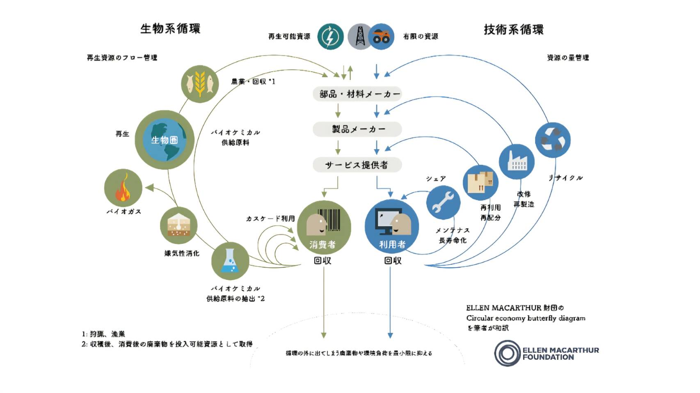

サーキュラーエコノミー
サーキュラーエコノミーとは
今回の授業では、サーキュラーエコノミーについて学習した。
まず、サーキュラーエコノミーについて説明する前に従来の生産から消費までの構造について説明する必要がある。
これまでは、リニアエコノミーといい、生産から消費までが一直線の経済であった。資源を集め、製造し、消費され
れば最後は廃棄と異形で処理され、これをまた一から繰り返していくという仕組みである。これはとてもシンプルで
最もオーソドックスな型であるが、デメリットも抱えている。当然のことであるが資源には限度がある。無限に生産
し続けることは不可能である。時間が経てば回復して行くが、それを上回るスピードで生産、消費廃棄していけば底
を突いてまう。そこで今回のサーキュラーエコノミーが鍵になってくる。
従来のリニアエコノミーは最後、廃棄という形で終着していたが、サーキュラーエコノミーでは廃棄を終着点とせず、
消費や製造、原材料の時点まで戻し、循環させるのである。そうすることで、できるだけ無駄をなくし、持続可能な
経済を形成することができる。
バタフライダイアグラム
このサーキュラーエコノミーを視覚的に図解したのがバタフライバイアグラムである。

左の循環は土から上(植物など)を資源としている製品の循環である。右の循環は土から下（鉱物など）を資源としてい
る製品の循環を示している。この二つの循環を表したこの図が、蝶に見えることからバタフライダイアグラムと呼ばれる。
グループワーク
普及の上での問題点
自分たちのグループでは、サーキュラーエコノミー普及の問題点について、その知名度や認識度にも問題はあるが、それ以上
にサーキュラーエコノミーの押し出し方に改善点があ流と考えた。自分達消費者の消費心理、製品を選ぶときの心理に寄り添い
答えることが、サーキュラーエコノミー普及には必要だと思った。一人一人が環境に配慮し、それに則した製品を買えばサーキ
ュラーエコノミー実現に近づき、地球環境改善に近づくこと自体は多くの人が理解できるはずである。しかし、それを知ってい
てもなかなか難しいのではないだろうか。多くの人は商品を選ぶときに「環境のため」という目的よりも、できるだけ安価なも
の、品質の高いもの、シンプルに自分が欲しいものなど、自身の欲求や利益が商品選びに大きく反映されており、環境に良いと
いう価値はあくまでおまけのような感覚の方が強くなってしまうのではないだろうかと考えた。また、一度環境にいいものを選
択した時に世界へ与える影響の大きさと、本当に欲しいものを買った場合の自分への利益を天秤にかけたとき、どうしても後者
が勝ってしまう。そのため結局環境に良い方は選択されない。というのがサーキュラーエコノミーが普及しずらい、そういった
製品が普及しない理由ではないかと考えた。しかし、その中でもカーシェアサービスやループなど、シェアリングサービスはか
なり普及している。これは、サーキュラーエコノミーを実現するためのサービスとしてあげることができるが、消費者はおそら
くそこを意識して利用してないと思われる。結局のところ、利用する上で便利か、自分にとってどんな意味があるのか、まずは
そこを押すことが普及させて行くために必要な課題であると考えた。